代码复写| 肢端黑色素瘤细胞scRNA-seq图谱&免疫治疗
原文：https://mp.weixin.qq.com/s?__biz=MzAwMzIzOTk5OQ==&mid=2247507783&idx=1&sn=6ca5dc13a6aefbe78cce3f938fe04e40&chksm=9b3ca617ac4b2f01fb6e4677668f052f6361282ff394745394d363b54ea4c1eb58d2f30da30a#rd 合集：单细胞教程全收录 / 全文复现
评审环节开始！
** 写在前面**
首届“寻因杯”单细胞代码复写大赛正在展开评审环节，这次带来的是22号作品，复写了题为"Single cell characterization of the cellular landscape of acral melanoma identifies novel targets for immunotherapy"的论文。文章链接 ：https://www.ncbi.nlm.nih.gov/pmc/articles/pmid/35247927/数据原始链接： 投稿人未提供，可在文末百度云下载相关文件图片集锦 ：
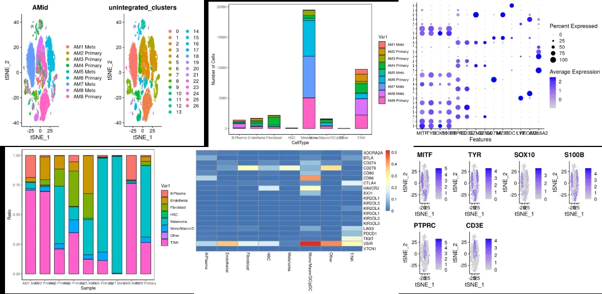
文献简介 ：投稿人未提供
一、复写内容
降维聚类
加载相关R包
if(!require(Seurat))install.packages("Seurat")
## Loading required package: Seurat
## Loading required package: SeuratObject
## Loading required package: sp
## 'SeuratObject' was built under R 4.2.2 but the current version is
## 4.3.2; it is recomended that you reinstall 'SeuratObject' as the ABI
## for R may have changed
## 'SeuratObject' was built with package 'Matrix' 1.6.3 but the current
## version is 1.6.4; it is recomended that you reinstall 'SeuratObject' as
## the ABI for 'Matrix' may have changed
##
## Attaching package: 'SeuratObject'
## The following object is masked from 'package:base':
##
## intersect
if(!require(dplyr))install.packages("dplyr")
## Loading required package: dplyr
##
## Attaching package: 'dplyr'
## The following objects are masked from 'package:stats':
##
## filter, lag
## The following objects are masked from 'package:base':
##
## intersect, setdiff, setequal, union
if(!require(mindr))install.packages("mindr")
## Loading required package: mindr
if(!require(mindr))install.packages("tidyverse")
if(!require(Matrix))install.packages("Matrix")
## Loading required package: Matrix
if(!require(hdf5r))install.packages("hdf5r")
## Loading required package: hdf5r
if(!require(BiocManager))install.packages("BiocManager")
## Loading required package: BiocManager
if(!require(ggplot2))install.packages("ggplot2")
## Loading required package: ggplot2
if(!require(rmarkdown))install.packages("rmarkdown")
## Loading required package: rmarkdown
if(!require(tinytex))install.packages("tinytex")
## Loading required package: tinytex
标准化、归一化。进行降维聚类。 本例中seurat_obj由h5文件转化而来，由于h5文件是做好去批次效应的，故此处不合并样本。
seurat_obj <- readRDS("~/acral-melanoma/data/seurat_obj.rds")
seurat_obj <- NormalizeData(seurat_obj)
seurat_obj <- FindVariableFeatures(seurat_obj)
seurat_obj <- ScaleData(seurat_obj)
## Centering and scaling data matrix
seurat_obj <-RunPCA(seurat_obj)
## PC_ 1
## Positive: IGFBP4, COL6A2, CXCL12, COL1A2, MGP, COL3A1, DCN, PLPP3, HTRA1, COL1A1
## SPARCL1, COL6A1, ADIRF, FBLN2, TCF4, PLAC9, COL4A2, C1S, COL6A3, THY1
## LUM, MFAP4, COL4A1, SPARC, C1R, PRRX1, FBN1, ID3, GNG11, COL15A1
## Negative: CD52, CORO1A, CXCR4, CD37, CD69, CD3D, RAC2, LTB, CD2, IL7R
## TRBC2, LAPTM5, CD7, DUSP2, PMEL, LCP1, CD27, GPR183, TAGAP, ALOX5AP
## ITGB2, DCT, SELL, SRGN, TRBC1, TYRP1, CTSW, TRAC, UCP2, CST7
## PC_ 2
## Positive: APOE, PMEL, SERPINE2, S100B, STMN1, TUBB, S100A1, GMPR, LGALS3, H2AFZ
## FLOT1, TUBB2A, HMGA1, LINC00518, TYRP1, PLTP, BAMBI, SCIN, TUBB2B, MFSD12
## SLC29A1, PHACTR1, CCND1, BCAN, SOX4, DCT, CTAG2, MFAP2, CTSB, ECM1
## Negative: TMSB4X, SRGN, LAPTM5, CD74, CXCR4, CORO1A, CD37, DUSP1, CD52, TNFAIP3
## CD69, LSP1, LCP1, IL32, ZFP36, GPR183, RAC2, HLA-DRB5, DUSP2, HLA-DPA1
## HLA-DRB1, ITGB2, HLA-DPB1, BTG2, IL7R, HLA-DQB1, LTB, HLA-DQA1, RGCC, HLA-DRA
## PC_ 3
## Positive: PLVAP, TM4SF1, ADGRL4, RAMP3, CLEC14A, EMCN, PECAM1, VWF, ESAM, EGFL7
## CDH5, SOX18, NPDC1, CD93, CYYR1, PTPRB, MMRN2, CALCRL, PODXL, CD34
## AQP1, CLDN5, GNG11, RAMP2, ERG, BCAM, SLCO2A1, FLT1, ACKR1, ENG
## Negative: DCN, COL1A2, COL3A1, COL1A1, LUM, COL6A3, COL6A2, SFRP2, MFAP4, FBLN1
## COL6A1, MXRA8, CFD, C1S, THY1, VCAN, COL5A1, PRRX1, DPT, CD248
## CXCL14, OLFML3, COL14A1, ISLR, COMP, PDGFRB, PCOLCE, COL5A2, MXRA5, CRABP2
## PC_ 4
## Positive: IL32, CD3D, IFITM1, CD2, SPP1, RARRES2, CD7, ITM2A, TRBC2, IL7R
## CHADL, RAMP2, CD69, CTSK, TUBA4A, LBH, LTB, TRBC1, CCL5, APOC1
## SPARCL1, CD27, GNG11, TRAC, ICOS, BCAM, CD34, MAL, ESAM, ICAM2
## Negative: LYZ, SPI1, TYROBP, FCER1G, MS4A6A, AIF1, CLEC7A, HLA-DQA1, HLA-DRA, MS4A7
## CPVL, CD14, CSF1R, IGSF6, HLA-DMA, HCK, C1QA, HLA-DPB1, HLA-DQB1, C1QC
## MNDA, HLA-DQA2, LST1, HLA-DRB5, HLA-DRB1, HLA-DPA1, SERPINA1, LILRB2, HLA-DMB, C1QB
## PC_ 5
## Positive: UBE2C, CCNA2, TPX2, KIFC1, CENPA, BIRC5, CDCA3, TOP2A, CCNB2, PBK
## PLK1, MKI67, TK1, CCNB1, UBE2T, ASPM, NUSAP1, CDC20, CDK1, CKAP2L
## PKMYT1, CENPF, NCAPG, KIF20A, CDCA8, AURKB, TROAP, SPC25, SKA3, KIF2C
## Negative: GAGE2A, CRYAB, IFI27, PHGDH, CTSK, SERPINE2, CADM3, BANCR, CST3, OLFM1
## SERPING1, CRTAC1, CTSL, AL139002.1, SPESP1, MAGEA1, CTSH, IFITM3, GAPDHS, APOE
## HIST3H2A, SNX10, TFF3, XAGE3, SLC25A46, PRSS21, LGI4, AC006059.1, HIST1H2AC, TTC39A
seurat_obj <- FindNeighbors(seurat_obj, dims = 1:30, reduction = "pca")
## Computing nearest neighbor graph
## Computing SNN
seurat_obj <- FindClusters(seurat_obj, resolution = 0.6, cluster.name = "unintegrated_clusters")
## Modularity Optimizer version 1.3.0 by Ludo Waltman and Nees Jan van Eck
##
## Number of nodes: 36208
## Number of edges: 1291795
##
## Running Louvain algorithm...
## Maximum modularity in 10 random starts: 0.9348
## Number of communities: 27
## Elapsed time: 15 seconds
seurat_obj <- RunTSNE(seurat_obj, dims = 1:30, reduction = "pca", reduction.name = "tsne.unintegrated")
AMid<-c("1"="AM1 Mets","2"="AM2 Primary","3"="AM3 Primary","4"="AM4 Primary","5"="AM5 Mets","6"="AM6 Primary","7"="AM7 Mets","8"="AM8 Mets","9"="AM8 Primary")
seurat_obj@meta.data$AMid = unname(AMid[seurat_obj@meta.data$orig.ident])
绘制聚类图，以样本来源和细胞簇进行分组标识，对应原文Figure1A
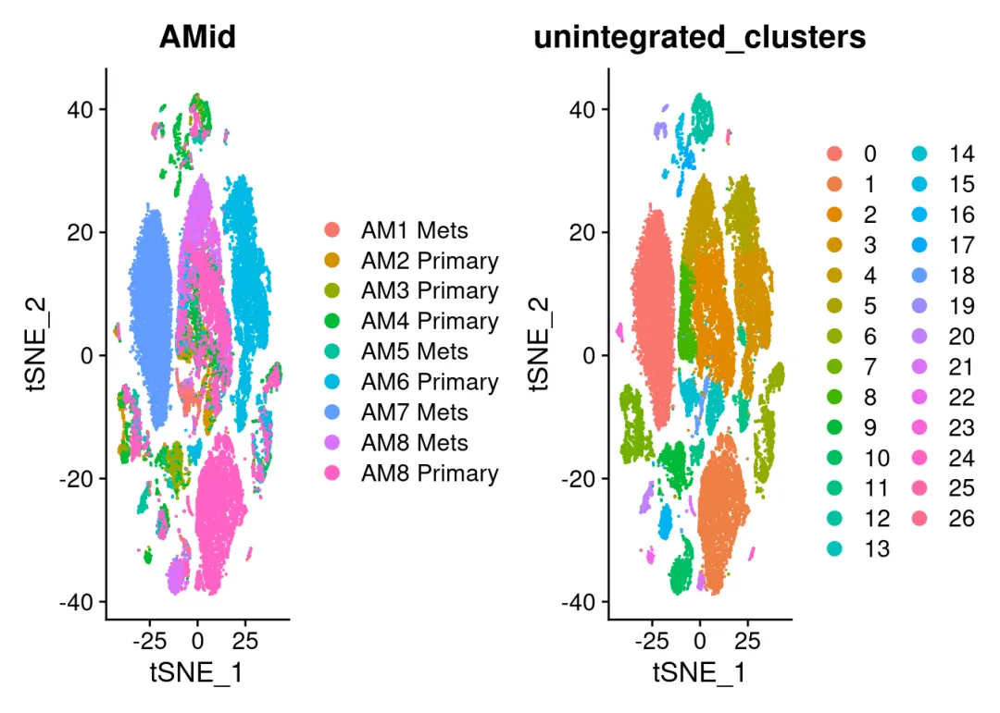
细胞注释
自动注释：依据原文methods描述，使用SingleR进行注释，参考数据库选用BlueprintEncodeData。 手动注释：结合各类细胞的经典Markers进行识别。
library("SingleR")
## Loading required package: SummarizedExperiment
## Loading required package: MatrixGenerics
## Loading required package: matrixStats
##
## Attaching package: 'matrixStats'
## The following object is masked from 'package:dplyr':
##
## count
##
## Attaching package: 'MatrixGenerics'
## The following objects are masked from 'package:matrixStats':
##
## colAlls, colAnyNAs, colAnys, colAvgsPerRowSet, colCollapse,
## colCounts, colCummaxs, colCummins, colCumprods, colCumsums,
## colDiffs, colIQRDiffs, colIQRs, colLogSumExps, colMadDiffs,
## colMads, colMaxs, colMeans2, colMedians, colMins, colOrderStats,
## colProds, colQuantiles, colRanges, colRanks, colSdDiffs, colSds,
## colSums2, colTabulates, colVarDiffs, colVars, colWeightedMads,
## colWeightedMeans, colWeightedMedians, colWeightedSds,
## colWeightedVars, rowAlls, rowAnyNAs, rowAnys, rowAvgsPerColSet,
## rowCollapse, rowCounts, rowCummaxs, rowCummins, rowCumprods,
## rowCumsums, rowDiffs, rowIQRDiffs, rowIQRs, rowLogSumExps,
## rowMadDiffs, rowMads, rowMaxs, rowMeans2, rowMedians, rowMins,
## rowOrderStats, rowProds, rowQuantiles, rowRanges, rowRanks,
## rowSdDiffs, rowSds, rowSums2, rowTabulates, rowVarDiffs, rowVars,
## rowWeightedMads, rowWeightedMeans, rowWeightedMedians,
## rowWeightedSds, rowWeightedVars
## Loading required package: GenomicRanges
## Loading required package: stats4
## Loading required package: BiocGenerics
##
## Attaching package: 'BiocGenerics'
## The following objects are masked from 'package:dplyr':
##
## combine, intersect, setdiff, union
## The following object is masked from 'package:SeuratObject':
##
## intersect
## The following objects are masked from 'package:stats':
##
## IQR, mad, sd, var, xtabs
## The following objects are masked from 'package:base':
##
## anyDuplicated, aperm, append, as.data.frame, basename, cbind,
## colnames, dirname, do.call, duplicated, eval, evalq, Filter, Find,
## get, grep, grepl, intersect, is.unsorted, lapply, Map, mapply,
## match, mget, order, paste, pmax, pmax.int, pmin, pmin.int,
## Position, rank, rbind, Reduce, rownames, sapply, setdiff, sort,
## table, tapply, union, unique, unsplit, which.max, which.min
## Loading required package: S4Vectors
##
## Attaching package: 'S4Vectors'
## The following object is masked from 'package:hdf5r':
##
## values
## The following objects are masked from 'package:Matrix':
##
## expand, unname
## The following objects are masked from 'package:dplyr':
##
## first, rename
## The following object is masked from 'package:utils':
##
## findMatches
## The following objects are masked from 'package:base':
##
## expand.grid, I, unname
## Loading required package: IRanges
##
## Attaching package: 'IRanges'
## The following objects are masked from 'package:dplyr':
##
## collapse, desc, slice
## The following object is masked from 'package:sp':
##
## %over%
## Loading required package: GenomeInfoDb
## Loading required package: Biobase
## Welcome to Bioconductor
##
## Vignettes contain introductory material; view with
## 'browseVignettes()'. To cite Bioconductor, see
## 'citation("Biobase")', and for packages 'citation("pkgname")'.
##
## Attaching package: 'Biobase'
## The following object is masked from 'package:MatrixGenerics':
##
## rowMedians
## The following objects are masked from 'package:matrixStats':
##
## anyMissing, rowMedians
##
## Attaching package: 'SummarizedExperiment'
## The following object is masked from 'package:Seurat':
##
## Assays
## The following object is masked from 'package:SeuratObject':
##
## Assays
library("celldex")
##
## Attaching package: 'celldex'
## The following objects are masked from 'package:SingleR':
##
## BlueprintEncodeData, DatabaseImmuneCellExpressionData,
## HumanPrimaryCellAtlasData, ImmGenData, MonacoImmuneData,
## MouseRNAseqData, NovershternHematopoieticData
bed<-BlueprintEncodeData()
## see ?celldex and browseVignettes('celldex') for documentation
## loading from cache
## see ?celldex and browseVignettes('celldex') for documentation
## loading from cache
seurat_obj.SingleR<-GetAssayData(seurat_obj,slot="data")
## Warning: The `slot` argument of `GetAssayData()` is deprecated as of SeuratObject 5.0.0.
## ℹ Please use the `layer` argument instead.
## This warning is displayed once every 8 hours.
## Call `lifecycle::last_lifecycle_warnings()` to see where this warning was
## generated.
seurat_obj.bed<-SingleR(test = seurat_obj.SingleR,ref = bed,labels = bed$label.main)
seurat_obj@meta.data$SingleRLabels<-seurat_obj.bed$labels
singleR_annotations<-table(seurat_obj.bed$labels,seurat_obj$seurat_clusters )
write.csv(singleR_annotations,file="singleR_annotations_unintegrated.csv")
saveRDS(seurat_obj,file="seurat_obj.unintegrated.rds")
genes_to_check = c("MITF","TYR","SOX10","S100B","PTPRC","CD3E","GZMB","GZMA","CD79A","MZB1","SDC1","LYZ",'PECAM1',"COL6A2")
p<-DotPlot(seurat_obj,features = genes_to_check,assay="RNA")
p
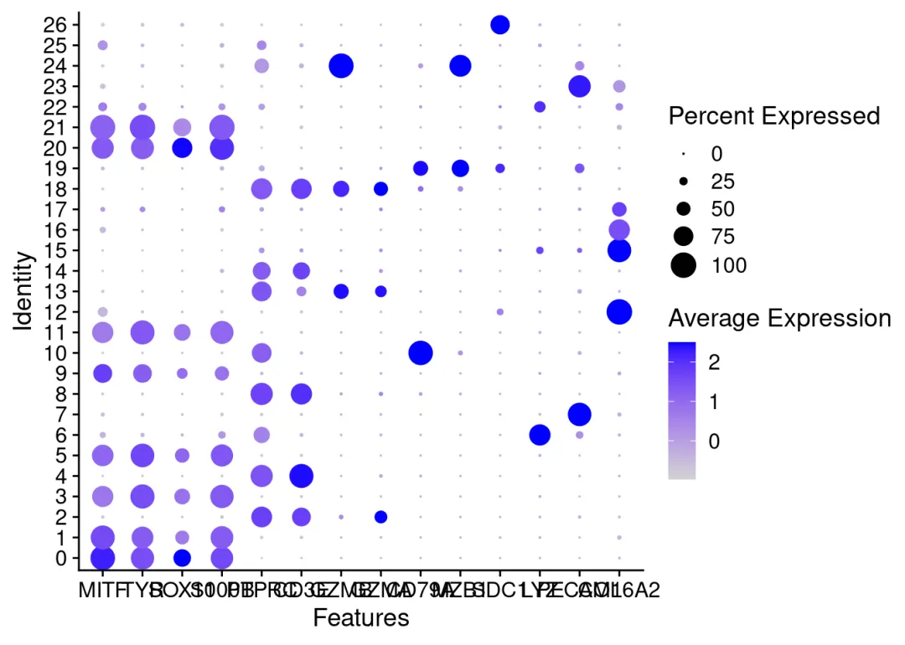
FeaturePlot(seurat_obj,features = genes_to_check[1:6],ncol = 4)
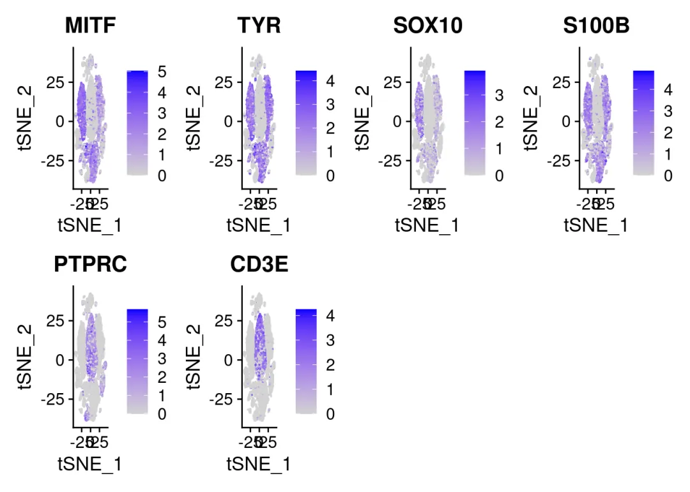
FeaturePlot(seurat_obj,features = genes_to_check[7:13],ncol = 4)
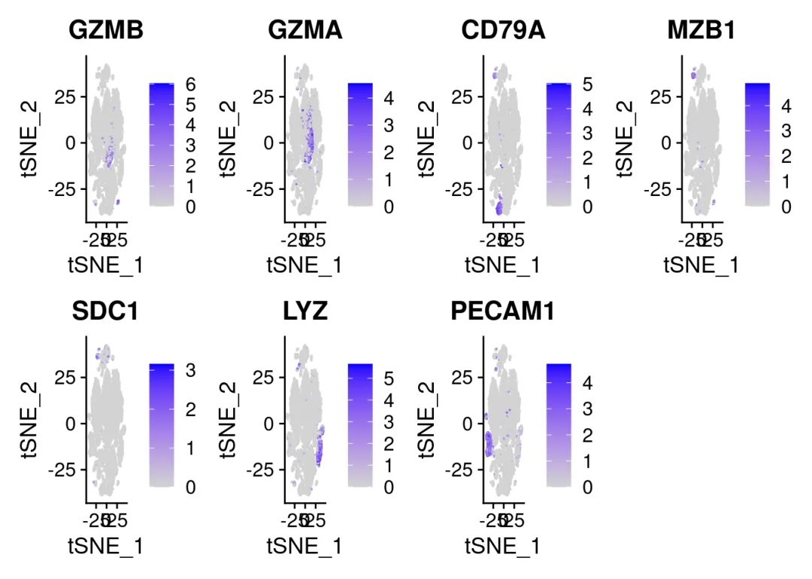
绘制细胞注释的聚类图（对应原文Figure1B or C）和堆叠图（对应原文Figure1D and E），
CellType1<-c("0"="Melanoma","1"="Melanoma","2"="T/NK","3"="Melanoma","4"="T/NK","5"="Melanoma","6"="Mono/Macro/DC/pDC",
"7"="Endothelial","8"="T/NK","9"="Melanoma","10"="B/Plasma","11"="Melanoma","12"="Fibroblast","13"="T/NK",
"14"="T/NK","15"="Fibroblast","16"="Fibroblast","17"="Fibroblast","18"="T/NK","19"="B/Plasma","20"="Melanoma",
"21"="Melanoma","22"="Melanoma","23"="Endothelial","24"="B/Plasma","25"="HSC","26"="Other")
seurat_obj@meta.data$CellType1 = unname(CellType1[seurat_obj@meta.data$seurat_clusters])
DimPlot(seurat_obj,reduction = "tsne.unintegrated",group.by = c("CellType1","unintegrated_clusters"),label = TRUE)
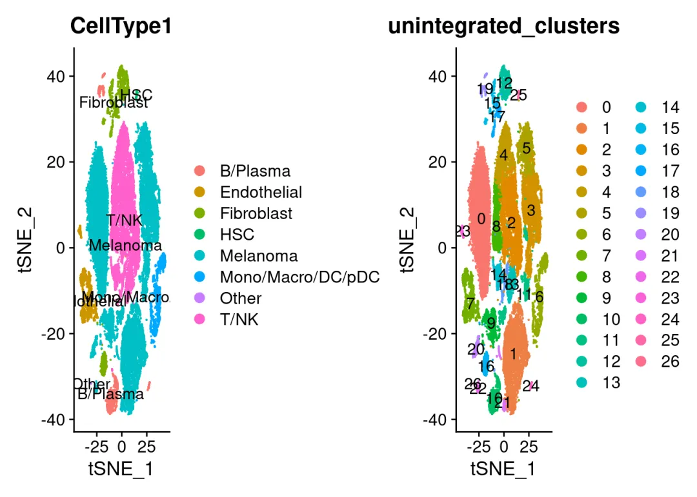
Cellratio1 <- prop.table(table(seurat_obj$CellType1,seurat_obj$AMid), margin = 2)
Cellratio1 <- as.data.frame(Cellratio1)
colourCount1 = length(unique(Cellratio1$Var1))
ggplot(Cellratio1) +
geom_bar(aes(x =Freq, y=Var2 , fill = Var1),stat = "identity",width = 0.7,linewidth = 0.5,colour = '#222222')+
theme_classic() +
labs(x='Ratio',y ='Sample')+
coord_flip()+
theme(panel.border = element_rect(fill=NA,color="black", size=0.5, linetype="solid"))
## Warning: The `size` argument of `element_rect()` is deprecated as of ggplot2 3.4.0.
## ℹ Please use the `linewidth` argument instead.
## This warning is displayed once every 8 hours.
## Call `lifecycle::last_lifecycle_warnings()` to see where this warning was
## generated.
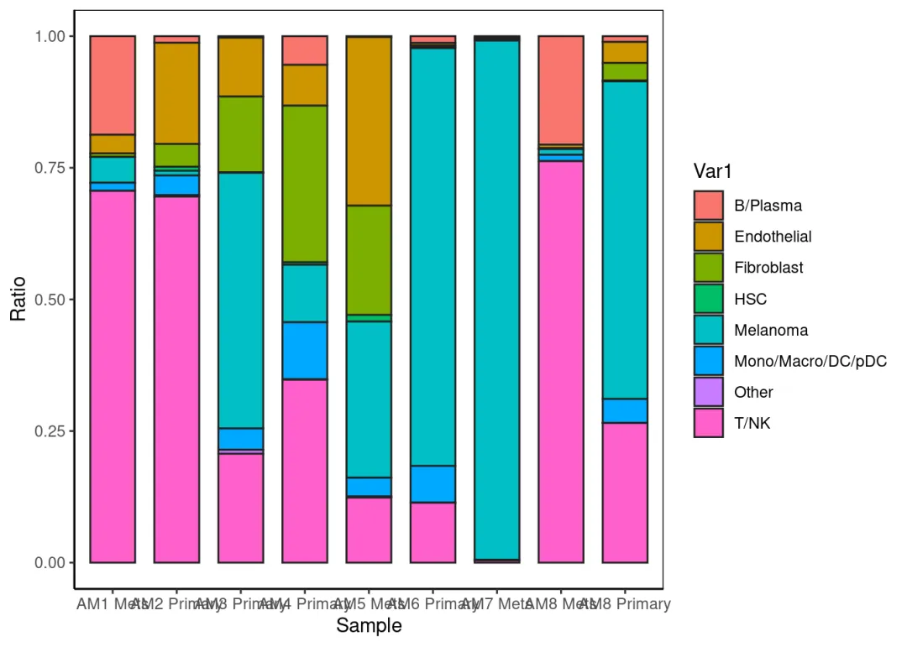
Cellcount1 <- as.data.frame(table(seurat_obj$AMid,seurat_obj$CellType1))
colourCount1 = length(unique(Cellcount1$Var1))
ggplot(Cellcount1) +
geom_bar(aes(x =Freq, y=Var2 , fill = Var1),stat = "identity",width = 0.7,linewidth = 0.5,colour = '#222222')+
theme_classic() +
labs(x='Number of Cells',y ='CellType')+
coord_flip()+
theme(panel.border = element_rect(fill=NA,color="black", size=0.5, linetype="solid"))
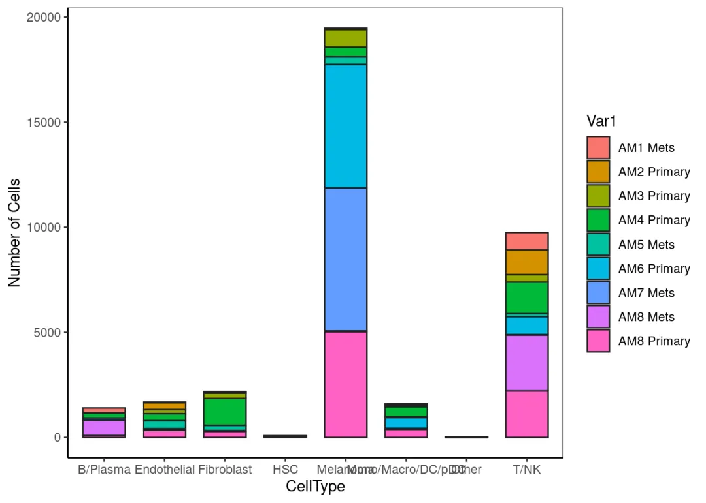
免疫检查点分析
分析一些免疫检查点在各类细胞的表达情况。绘制出的热图对应原文Figure6A。另外在得到的CheckPoints.csv文件中可以看到，VISR（即VISTA）在51.8%的髓系细胞中表达，TIGIT在21.3%的T/NK细胞中表达，这与原文的结果相对应。
checkpoints = c("ADORA2A","BTLA","CD274","CD276","CD80","CD86","CTLA4","HAVCR2","IDO1","KIR2DL1","KIR2DL3","KIR2DL4","KIR3DL1","KIR3DL2","KIR3DL3","LAG3","PDCD1","TIGIT","VSIR","VTCN1")
data<-as.matrix(seurat_obj@assays$RNA$data)
## Warning in asMethod(object): sparse->dense coercion: allocating vector of size
## 9.0 GiB
data<-data[checkpoints,]
cluster<-unique(seurat_obj$CellType1)
CheckPoints<-data.frame()
CheckPoints<-data.frame(checkpoints)
for (i in sort(cluster)){
a<-data[,names(seurat_obj$CellType1[seurat_obj$CellType1==i])]
b<-as.matrix(apply(a,1,function(x){round(length(x[x!=0])/ncol(a),digit = 3)}))
CheckPoints<-cbind(CheckPoints,b[,1])
}
row.names(CheckPoints)<-checkpoints
CheckPoints<-CheckPoints[,2:9]
colnames(CheckPoints)<-sort(cluster)
if(!require(pheatmap))install.packages("pheatmap")
## Loading required package: pheatmap
pheatmap(CheckPoints,cluster_cols = F,cluster_rows = F)
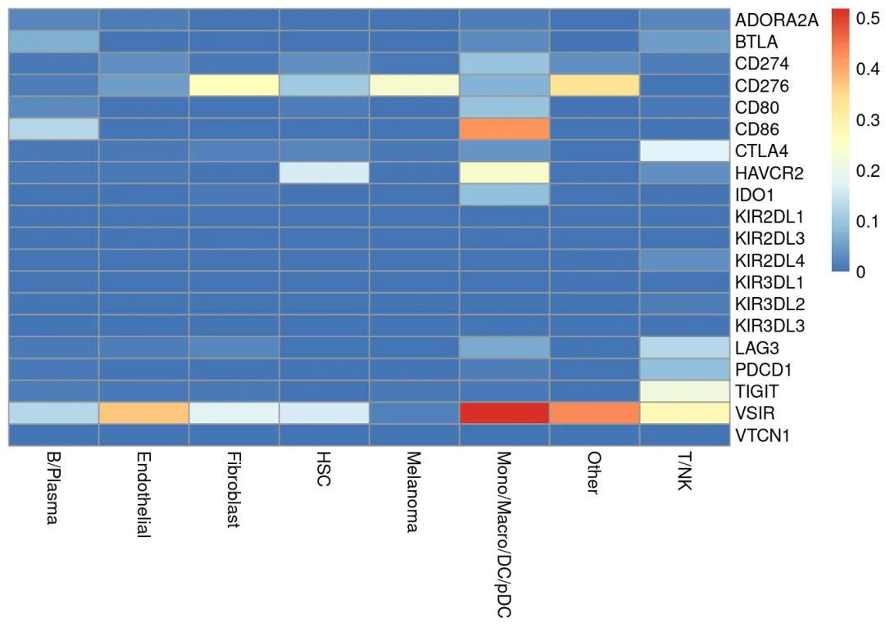
write.csv(CheckPoints,file="CheckPoints.csv")
以下三段代码分别绘制在不同类型和不同样本中表达三个免疫检查点ADORA2A、TIGIT、VSIR的细胞百分比的热图，与原文中Figure6C对应。
ADORA2A
Sample<-unique(seurat_obj$AMid)
data_ADORA2A<-t(as.matrix(data["ADORA2A",]))
ADORA2A<-data.frame(matrix(nrow = length(Sample),ncol = length(cluster)))
row.names(ADORA2A)<-Sample
colnames(ADORA2A)<-sort(cluster)
for(i in Sample){
for(j in sort(cluster)){
a<-t(data.frame(data_ADORA2A[,intersect(names(seurat_obj$AMid[seurat_obj$AMid==i]),
names(seurat_obj$CellType1[seurat_obj$CellType1==j]))]))
b<-as.matrix(apply(a,1,function(x){round(length(x[x!=0])/ncol(a),digit = 3)}))
ADORA2A[i,j]<-b
}
}
ADORA2A[is.na(ADORA2A)]<-0
pheatmap(ADORA2A,cluster_cols = F,cluster_rows = F)
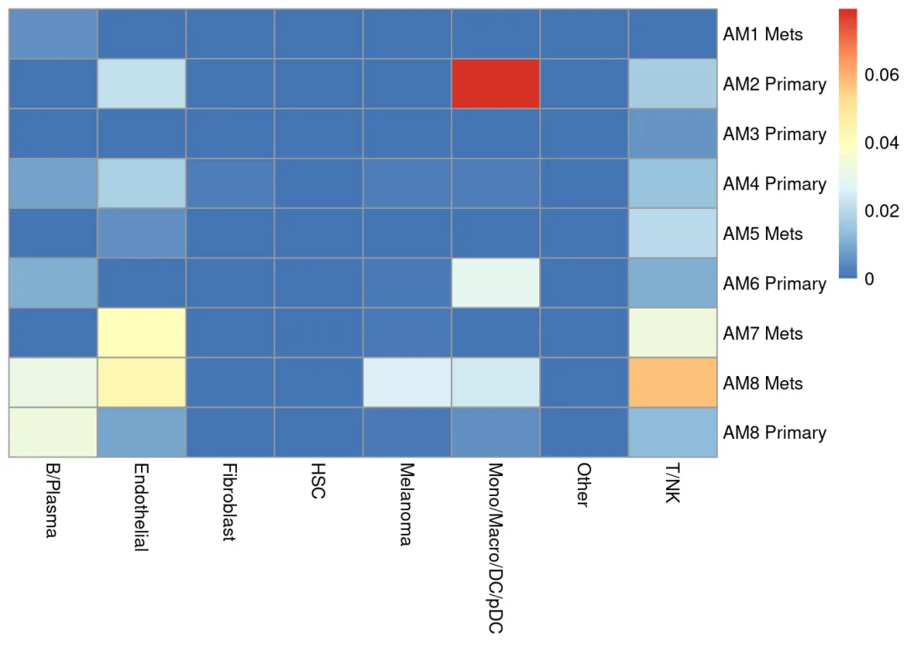
TIGIT
data_TIGIT<-t(as.matrix(data["TIGIT",]))
TIGIT<-data.frame(matrix(nrow = length(Sample),ncol = length(cluster)))
row.names(TIGIT)<-Sample
colnames(TIGIT)<-sort(cluster)
for(i in Sample){
for(j in sort(cluster)){
a<-t(data.frame(data_TIGIT[,intersect(names(seurat_obj$AMid[seurat_obj$AMid==i]),
names(seurat_obj$CellType1[seurat_obj$CellType1==j]))]))
b<-as.matrix(apply(a,1,function(x){round(length(x[x!=0])/ncol(a),digit = 3)}))
TIGIT[i,j]<-b
}
}
TIGIT[is.na(TIGIT)]<-0
pheatmap(TIGIT,cluster_cols = F,cluster_rows = F)
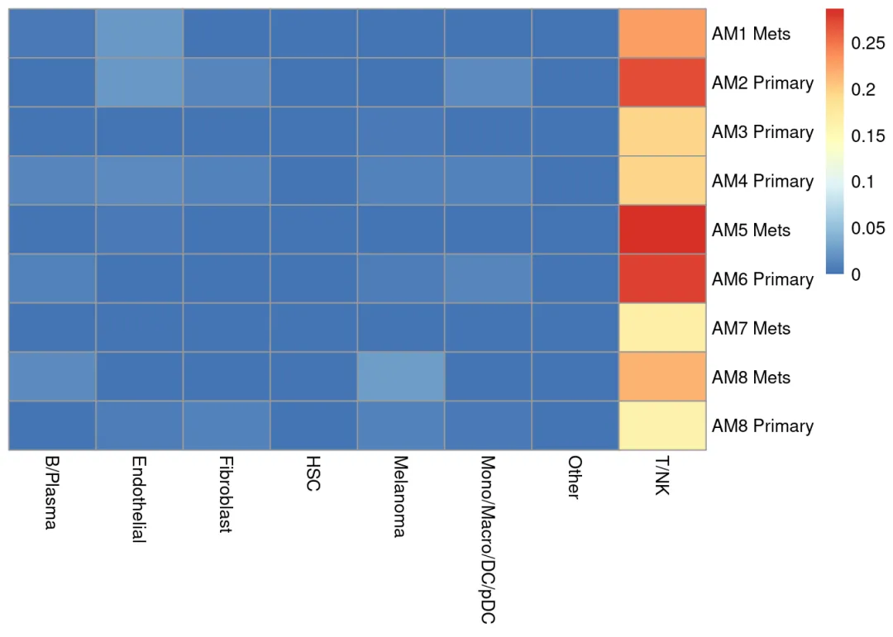
VSIR
data_VSIR<-t(as.matrix(data["VSIR",]))
VSIR<-data.frame(matrix(nrow = length(Sample),ncol = length(cluster)))
row.names(VSIR)<-Sample
colnames(VSIR)<-sort(cluster)
for(i in Sample){
for(j in sort(cluster)){
a<-t(data.frame(data_VSIR[,intersect(names(seurat_obj$AMid[seurat_obj$AMid==i]),
names(seurat_obj$CellType1[seurat_obj$CellType1==j]))]))
b<-as.matrix(apply(a,1,function(x){round(length(x[x!=0])/ncol(a),digit = 3)}))
VSIR[i,j]<-b
}
}
VSIR[is.na(VSIR)]<-0
pheatmap(VSIR,cluster_cols = F,cluster_rows = F)
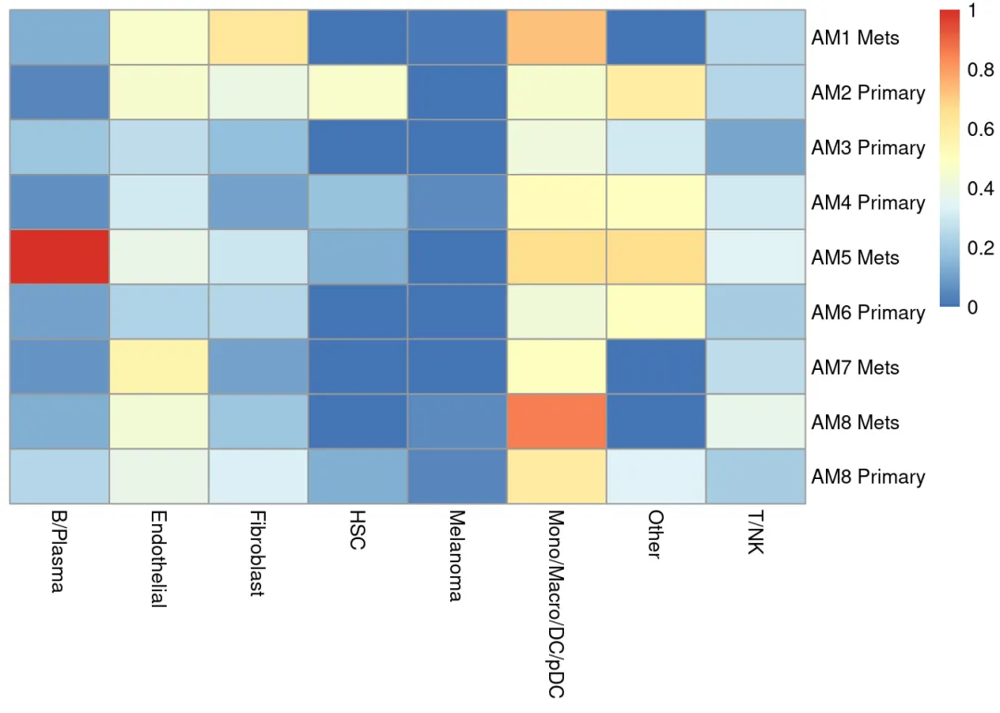
01
二、测试文件及代码
如果你也想学习本文的代码和思路，我们给大家准备好了测试文件和代码。
链接：https://pan.baidu.com/s/15RWKimG483hVD9BHM5M0_g?pwd=2sqw
提取码：2sqw
02
三、合作方介绍
本次活动由Biomamba生信基地 组织主办、北京寻因生物科技 有限公司独家冠名、科研者之家、西柚云超算联合赞助，设立总价值约50W 的科研助力基金。 北京寻因生物科技有限公司：
北京寻因生物科技有限公司（简称寻因生物）成立于2018年，秉承“用技术温暖生命，预见未来”的企业愿景，致力于全球单细胞市场标准普世化发展，推动单细胞技术在早筛、临床、药研等应用方向的深耕落地，为全球科学家、技术公司及药企工业等客户提供可信赖的高品质单细胞技术服务及实验室建设解决方案。
科研者之家：
科研者之家（www.home-for-researchers）是目前国内最知名的科研工具箱平台，以“科研不停，神器不止”为理念，自2019年上线以来，多款工具火爆科研界，如AI写作助手、Figdraw在线绘图平台、生信零代码平台、AI润色、DLP一键改写降重、中文版Pubmed、课题思路助手等。截止目前，包括Nature，Advanced Materials等顶级期刊在内，科研者之家相关科研工具被论文引用已超2300次之多。
西柚云超算：
西柚云是一家专注于科研共享计算的云服务基建型公司。于2022年推出独立研发的大禹共享型计算系统，具有实例动态迁移（拒绝传统型共享服务器单节点卡顿）、开箱即用的生信环境、每个用户拥有独立的实例和root权限等特性。
03
四、往期作品回顾
干细胞样CD4+ T细胞与自身免疫性血管炎 结直肠癌免疫图谱中的基因表达程序 MLP模型鉴定免疫细胞发育和瘤内T细胞耗竭的单细胞染色质图谱 T Cell单细胞参考图谱 小鼠纹状体单细胞基因变化图谱 人类肾脏snRNA-seq图谱拟时序分析 CellRank的教程重现 胶质瘤相关巨噬细胞scRNA图谱 肝癌单细胞分群marker scRNA揭示T1D骨髓与骨质减少的关系 微环境中肿瘤免疫屏障决定了免疫治疗的效果肝脏发育、成熟的单细胞图谱 胰腺导管腺癌的内异质性和恶性进展scRNA-seq图谱 人类肾脏scRNA-seq图谱 小鼠与人类的空间表观单细胞图谱 疟疾中免疫细胞亚群的调控响应 儿童白血病的单细胞数据读取小鼠脑动脉瘤模型的scRNA-Seq分析 非小细胞肺癌免疫治疗后肿瘤微环境重塑scRNA图谱colon, tumor, anti-PD-1, scRNA-seq
04
**本次活动最终解释权归主办方所有!******主办方拥有对作品的编辑、宣发权利!

如何联系我们

 公众号后台消息回复不便，这里给大家留一下领取资料及免费服务器(足够支持你完成硕博生涯的生信环境)的微信号 ，方便各位随时交流、提建议（科研任务繁重，回复不及时请见谅）。此外呼声一直很高的交流群 也建好了，欢迎大家入群讨论：
公众号后台消息回复不便，这里给大家留一下领取资料及免费服务器(足够支持你完成硕博生涯的生信环境)的微信号 ，方便各位随时交流、提建议（科研任务繁重，回复不及时请见谅）。此外呼声一直很高的交流群 也建好了，欢迎大家入群讨论：
大家可以阅读完这几篇之后添加给生信入门初学者的小贴士 如何搜索公众号过往发布内容

 您点的每个赞和在看，我都认真当成了喜欢
您点的每个赞和在看，我都认真当成了喜欢